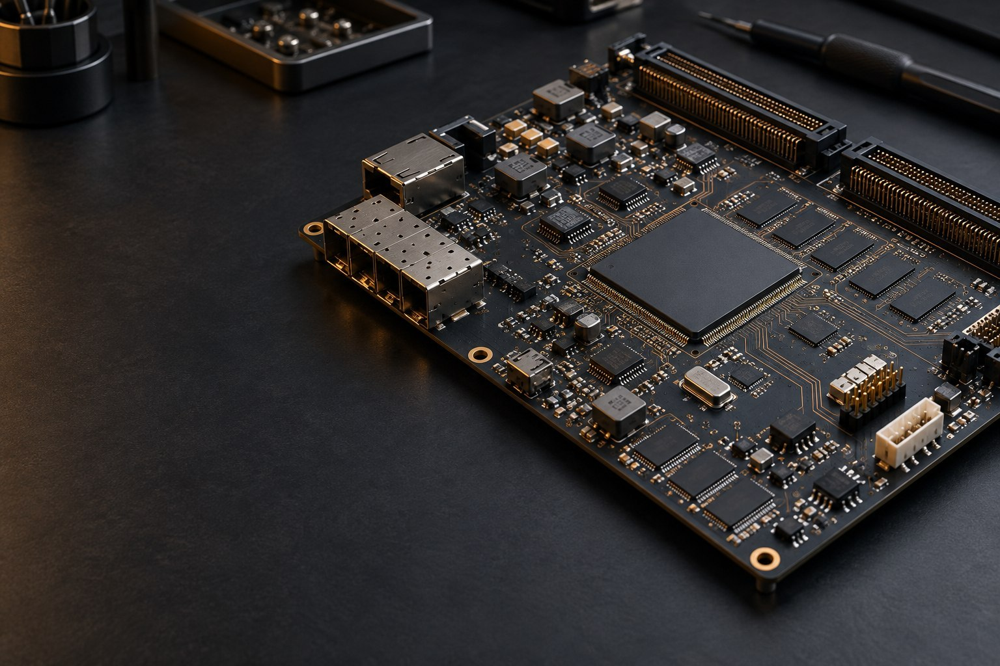

FPGA 架构与实现
从 LUT、FF、BRAM、DSP 和时钟网络出发，理解综合、布局布线与时序收敛。

不把 HDL 只当作代码。理解资源、时序、接口和数据流，才能把设计稳定地落到硬件上。
从 LUT、FF、BRAM、DSP 和时钟网络出发，理解综合、布局布线与时序收敛。
关注视频数据通路、DDR 缓存、跨时钟域和可靠复位。
从 ISA、数据通路和控制逻辑，逐步走向 RISC-V 处理器实现。
整理 I2C、USB、以太网与 UDP 等接口的原理和工程使用方式。
这里只展示经过筛选、适合公开的内容。私人笔记、配置和开发会话不会进入网站。
PUBLIC REPOSITORY
围绕 FPGA 基础资源、计算机组成、通信协议、外设与系统设计持续整理的学习笔记。
先完成一个可运行的工程，再回到底层资源建立完整认识。随后把知识带入更复杂的数据通路和处理器设计。